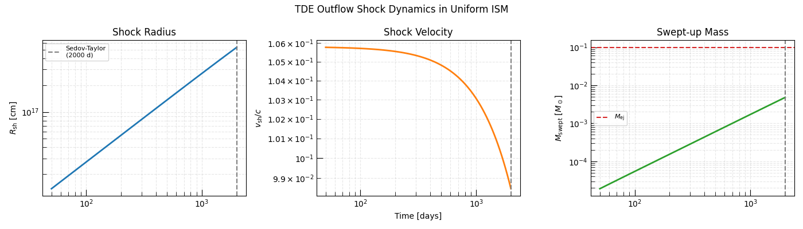
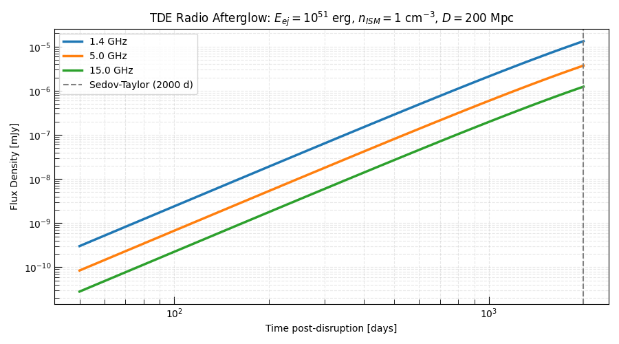
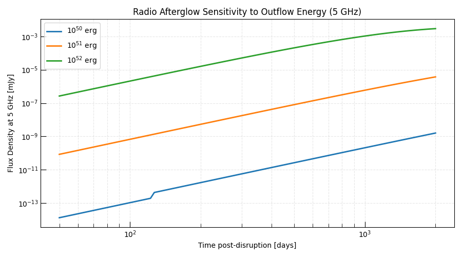

Note
Go to the end to download the full example code.
TDE Radio Afterglow: Sub-Relativistic Outflow in ISM#
Many TDEs launch a sub-relativistic outflow — either a disk wind, a reprocessing shell, or a low-Lorentz-factor jet — that expands into the surrounding interstellar medium (ISM). This outflow drives a forward shock that accelerates electrons and amplifies the magnetic field, producing delayed radio brightening months to years after the optical TDE peak.
This is distinct from the prompt (pre-peak) radio emission expected from a relativistic jet: TDE radio afterglows rise slowly because the outflow velocity \(v \ll c\) and the shock must first sweep up enough ISM to reach equipartition between the kinetic and internal energies.
Physical Setup#
We model the outflow as a spherically symmetric blast wave with:
Ejecta energy \(E_{\rm ej}\) — total kinetic energy of the outflow
Ejecta mass \(M_{\rm ej}\) — total mass of the outflow
ISM density \(\rho_{\rm ISM}\) — ambient electron number density
The shock dynamics are computed using
NumericalThinShellShockEngine
with a uniform-density ISM. The synchrotron emission is then computed using
the standard forward-closure machinery.
Hint
TDE outflow parameters \(E_{\rm ej}\) and \(\rho_{\rm ISM}\) are the main unknowns — together with the microphysical parameters \(\epsilon_e\) and \(\epsilon_B\). This example shows how to predict the radio light curves given these parameters. For the inverse problem (inferring parameters from observations) see Inferring Physical Shock Parameters from a Radio Supernova.
Relevant API#
NumericalThinShellShockEnginePowerLaw_Cooling_SSA_SynchrotronSEDcompute_strong_cold_shock_magnetic_field()compute_strong_cold_shock_temperature()
Setup#
import matplotlib.pyplot as plt
import numpy as np
from astropy import constants as const
from astropy import units as u
from triceratops.dynamics.shocks.numerical import NumericalThinShellShockEngine
from triceratops.dynamics.shocks.rankine_hugoniot import (
compute_strong_cold_shock_magnetic_field,
compute_strong_cold_shock_temperature,
)
from triceratops.dynamics.supernovae.profiles import get_broken_power_law_ejecta_kernel_func
from triceratops.radiation.synchrotron import PowerLaw_Cooling_SSA_SynchrotronSED
from triceratops.radiation.synchrotron.cooling import SynchrotronRadiativeCoolingEngine
from triceratops.utils.plot_utils import set_plot_style
set_plot_style()
Physical Parameters#
We adopt parameters representative of a well-studied TDE outflow (e.g. ASASSN-15oi, AT2019dsg, or similar delayed radio TDEs):
Ejecta energy \(E_{\rm ej} = 10^{51}\) erg — comparable to a Type Ibc SN
Ejecta mass \(M_{\rm ej} = 0.1 M_\odot\) — a typical disk wind mass
ISM density \(n_{\rm ISM} = 1\;\text{cm}^{-3}\) — typical for galactic nuclei
We observe the source at three frequencies: 1.4, 5, and 15 GHz.
# ------ Outflow parameters ------
E_ej = 1.0e51 * u.erg # Kinetic energy of TDE outflow
M_ej = 0.1 * u.Msun # Outflow mass
n_ISM = 1.0 / u.cm**3 # ISM electron number density
mu = 0.61 # Mean molecular weight (ionized)
rho_ISM = (mu * const.m_p * n_ISM).to(u.g / u.cm**3)
# ------ Microphysical parameters ------
epsilon_e = 0.1
epsilon_B = 0.1
p = 3.0
gamma_min = 1.0
gamma_max = 1e8
f_V = 1.0 # volume filling factor (sphere)
f_A = 1.0 # area filling factor
# ------ Observing setup ------
D_L = 200.0 * u.Mpc # Distance (cosmological TDE at z~0.05)
obs_frequencies = u.Quantity([1.4, 5.0, 15.0], u.GHz)
times = np.geomspace(50.0, 2000.0, 100) * u.day # 50 days to ~5 years
print(f"Outflow energy : {E_ej:.1e}")
print(f"Outflow mass : {M_ej:.2f}")
print(f"ISM density : {n_ISM:.1f}")
print(f"Distance : {D_L}")
Outflow energy : 1.0e+51 erg
Outflow mass : 0.10 solMass
ISM density : 1.0 1 / cm3
Distance : 200.0 Mpc
Shock Dynamics in Uniform ISM#
For a sub-relativistic blast wave expanding into a uniform ISM the shock decelerates as it sweeps up mass. Initially the ejecta are in free expansion (\(R \propto t\)), then decelerate toward the Sedov-Taylor phase (\(R \propto t^{2/5}\)) once the swept-up mass equals the ejecta mass.
The Sedov-Taylor transition radius is:
At \(R_{\rm ST}\) the radio peak is typically near maximum brightness.
# ISM density profile (uniform)
rho_ISM_cgs = rho_ISM.to_value(u.g / u.cm**3)
def rho_csm_uniform(r):
"""Uniform ISM density."""
return np.full_like(np.asarray(r, dtype=float), rho_ISM_cgs)
# Ejecta profile: broken power-law (n=10, delta=0)
G_ej = get_broken_power_law_ejecta_kernel_func(E_ej, M_ej, n=10, delta=0)
# Initial conditions: start well before the shock decelerates
v_init = np.sqrt(2 * E_ej / M_ej).to(u.cm / u.s) # free-expansion velocity
t_init = 10.0 * u.day
R_init = (v_init * t_init).to(u.cm)
params = {
"rho_csm": rho_csm_uniform,
"G_ej": G_ej,
"R_0": R_init,
"v_0": v_init,
"t_0": t_init,
"M_0": 1e-6 * u.Msun, # negligible initial swept mass
}
shock_engine = NumericalThinShellShockEngine()
shock_outputs = shock_engine.compute_shock_properties(times, **params)
r_sh = shock_outputs["radius"].to(u.cm)
v_sh = shock_outputs["velocity"].to(u.cm / u.s)
M_sw = shock_outputs["mass"].to(u.Msun)
print(f"\nInitial shock velocity : {v_init.to(u.km / u.s):.0f} = {(v_init / const.c).decompose():.4f} c")
4.0 0.75
Initial shock velocity : 31715 km / s = 0.1058 c
Sedov-Taylor Transition#
Estimate the transition radius and time from the swept-up mass evolution.
M_sw_over_Mej = (M_sw / M_ej).decompose()
idx_ST = np.argmin(np.abs(M_sw_over_Mej.value - 1.0))
t_ST = times[idx_ST]
R_ST = r_sh[idx_ST]
print(f"\nSedov-Taylor transition:")
print(f" t_ST = {t_ST:.0f}")
print(f" R_ST = {R_ST:.3e}")
print(f" v_ST = {v_sh[idx_ST].to(u.km / u.s):.0f}")
fig, axes = plt.subplots(1, 3, figsize=(14, 4), sharex=True)
axes[0].loglog(times.to_value(u.day), r_sh.to_value(u.cm), color="C0", lw=2)
axes[0].axvline(t_ST.to_value(u.day), ls="--", color="gray", label=f"Sedov-Taylor\n({t_ST.to_value(u.day):.0f} d)")
axes[0].set_ylabel(r"$R_{\rm sh}$ [cm]")
axes[0].set_title("Shock Radius")
axes[0].legend(fontsize=8)
axes[0].grid(True, which="both", ls="--", alpha=0.3)
axes[1].loglog(times.to_value(u.day), (v_sh / const.c.cgs).decompose().value, color="C1", lw=2)
axes[1].axvline(t_ST.to_value(u.day), ls="--", color="gray")
axes[1].set_ylabel(r"$v_{\rm sh}/c$")
axes[1].set_title("Shock Velocity")
axes[1].set_xlabel("Time [days]")
axes[1].grid(True, which="both", ls="--", alpha=0.3)
axes[2].loglog(times.to_value(u.day), M_sw.to_value(u.Msun), color="C2", lw=2)
axes[2].axhline(M_ej.to_value(u.Msun), ls="--", color="C3", label=r"$M_{\rm ej}$")
axes[2].axvline(t_ST.to_value(u.day), ls="--", color="gray")
axes[2].set_ylabel(r"$M_{\rm swept}$ [$M_\odot$]")
axes[2].set_title("Swept-up Mass")
axes[2].legend(fontsize=8)
axes[2].grid(True, which="both", ls="--", alpha=0.3)
plt.suptitle("TDE Outflow Shock Dynamics in Uniform ISM", fontsize=12)
plt.tight_layout()
plt.show()

Sedov-Taylor transition:
t_ST = 2000 d
R_ST = 5.324e+17 cm
v_ST = 29517 km / s
Post-Shock Conditions and Magnetic Field#
From the shock velocity we compute the downstream magnetic field strength (from equipartition with the post-shock internal energy) and the synchrotron cooling Lorentz factor.
# Upstream ISM density at the shock radius (uniform)
rho_up = rho_ISM.to(u.g / u.cm**3) * np.ones(len(times))
# Post-shock temperature and B-field
T_sh = compute_strong_cold_shock_temperature(shock_velocity=v_sh, mu=mu)
B = compute_strong_cold_shock_magnetic_field(
shock_velocity=v_sh,
upstream_density=rho_up,
epsilon_B=epsilon_B,
).to(u.G)
# Synchrotron cooling Lorentz factor
cooling_engine = SynchrotronRadiativeCoolingEngine()
gamma_c = cooling_engine.compute_cooling_gamma(B=B, t=times)
print(f"\nB-field range: {B.min():.4f} – {B.max():.4f}")
print(f"gamma_c range: {gamma_c.min():.1f} – {gamma_c.max():.1f}")
B-field range: 0.0025 G – 0.0027 G
gamma_c range: 712645.6 – 24706694.4
Synchrotron Radio Light Curves#
We now compute the synchrotron SED at each epoch using the forward closure and evaluate the predicted flux at the three radio frequencies.
sed = PowerLaw_Cooling_SSA_SynchrotronSED()
lcs = {freq: np.zeros(len(times)) for freq in obs_frequencies.to_value(u.GHz)}
for i, (t, r, v, B_i, gc) in enumerate(zip(times, r_sh, v_sh, B, gamma_c)):
sed_params = sed.from_physics_to_params(
B=B_i,
R=r,
gamma_min=gamma_min,
gamma_max=gamma_max,
p=p,
epsilon_E=epsilon_e,
epsilon_B=epsilon_B,
luminosity_distance=D_L,
f_V=f_V,
f_A=f_A,
gamma_c=float(gc),
pitch_average=True,
)
for freq in obs_frequencies:
flux = sed.sed(
nu=freq.to(u.Hz),
nu_m=sed_params["nu_m"],
nu_c=sed_params["nu_c"],
F_norm=sed_params["F_norm"],
nu_max=sed_params["nu_max"],
nu_ac=sed_params["nu_a"],
omega=sed_params["omega"],
p=p,
).to(u.mJy)
lcs[freq.to_value(u.GHz)][i] = flux.value
Plot Radio Light Curves#
The characteristic signature of a TDE radio afterglow: the flux density rises as the shock sweeps up ISM and the synchrotron emission grows, peaks at the Sedov-Taylor transition, then declines as the shock decelerates. Lower frequencies peak later because the SSA absorption frequency \(\nu_a\) falls with time.
freq_colors = {"1.4": "C0", "5.0": "C1", "15.0": "C2"}
fig, ax = plt.subplots(figsize=(9, 5))
for freq, color in zip(obs_frequencies, ["C0", "C1", "C2"]):
freq_ghz = freq.to_value(u.GHz)
ax.loglog(times.to_value(u.day), lcs[freq_ghz], lw=2.5, color=color, label=f"{freq_ghz:.1f} GHz")
ax.axvline(t_ST.to_value(u.day), ls="--", color="gray", lw=1.5, label=f"Sedov-Taylor ({t_ST.to_value(u.day):.0f} d)")
ax.set_xlabel("Time post-disruption [days]")
ax.set_ylabel("Flux Density [mJy]")
ax.set_title(
rf"TDE Radio Afterglow: $E_{{ej}} = 10^{{51}}$ erg, $n_{{ISM}} = 1$ cm$^{{-3}}$, $D = {D_L.to_value(u.Mpc):.0f}$ Mpc"
)
ax.legend()
ax.grid(True, which="both", ls="--", alpha=0.3)
plt.tight_layout()
plt.show()

Energy Scaling: Effect of Outflow Energy#
The peak flux and peak time scale with outflow energy. We sweep three values of \(E_{\rm ej}\) to show the observational sensitivity.
E_ej_values = [1e50, 1e51, 1e52] * u.erg
E_labels = [r"$10^{50}$ erg", r"$10^{51}$ erg", r"$10^{52}$ erg"]
e_colors = ["C0", "C1", "C2"]
fig, ax = plt.subplots(figsize=(9, 5))
for E, label, color in zip(E_ej_values, E_labels, e_colors):
G_ej_E = get_broken_power_law_ejecta_kernel_func(E, M_ej, n=10, delta=0)
v_init_E = np.sqrt(2 * E / M_ej).to(u.cm / u.s)
R_init_E = (v_init_E * t_init).to(u.cm)
params_E = {**params, "G_ej": G_ej_E, "v_0": v_init_E, "R_0": R_init_E}
sh_E = shock_engine.compute_shock_properties(times, **params_E)
r_E = sh_E["radius"].to(u.cm)
v_E = sh_E["velocity"].to(u.cm / u.s)
rho_up_E = rho_ISM * np.ones(len(times))
B_E = compute_strong_cold_shock_magnetic_field(v_E, rho_up_E, epsilon_B=epsilon_B).to(u.G)
gc_E = cooling_engine.compute_cooling_gamma(B=B_E, t=times)
lc_5ghz = np.zeros(len(times))
freq_eval = 5.0 * u.GHz
for i, (r, B_i, gc) in enumerate(zip(r_E, B_E, gc_E)):
sp = sed.from_physics_to_params(
B=B_i,
R=r,
gamma_min=gamma_min,
gamma_max=gamma_max,
p=p,
epsilon_E=epsilon_e,
epsilon_B=epsilon_B,
luminosity_distance=D_L,
f_V=f_V,
f_A=f_A,
gamma_c=float(gc),
pitch_average=True,
)
lc_5ghz[i] = (
sed.sed(
nu=freq_eval.to(u.Hz),
nu_m=sp["nu_m"],
nu_c=sp["nu_c"],
F_norm=sp["F_norm"],
nu_max=sp["nu_max"],
nu_ac=sp["nu_a"],
omega=sp["omega"],
p=p,
)
.to(u.mJy)
.value
)
ax.loglog(times.to_value(u.day), lc_5ghz, lw=2, color=color, label=label)
ax.set_xlabel("Time post-disruption [days]")
ax.set_ylabel("Flux Density at 5 GHz [mJy]")
ax.set_title(r"Radio Afterglow Sensitivity to Outflow Energy (5 GHz)")
ax.legend()
ax.grid(True, which="both", ls="--", alpha=0.3)
plt.tight_layout()
plt.show()

4.0 0.75
4.0 0.75
4.0 0.75
Interpretation#
The TDE radio afterglow has several characteristic observational signatures:
Delayed peak: the radio emission peaks months to years after the optical TDE, depending on \(E_{\rm ej}\) and \(n_{\rm ISM}\).
Frequency ordering: lower frequencies peak later, reflecting the declining SSA frequency as the shock expands.
Steep rise: during the free-expansion phase the flux rises steeply because the synchrotron-emitting volume grows as \(R^3 \propto t^3\).
Post-peak decline: after the Sedov-Taylor transition the shock decelerates and the flux falls as the synchrotron emission decreases.
Comparing model light curves to observed TDE radio data can constrain: the total outflow kinetic energy, the ISM density at the black hole’s sphere of influence, and (via the microphysical parameters) the efficiency of particle acceleration at the shock.
Total running time of the script: (0 minutes 5.201 seconds)